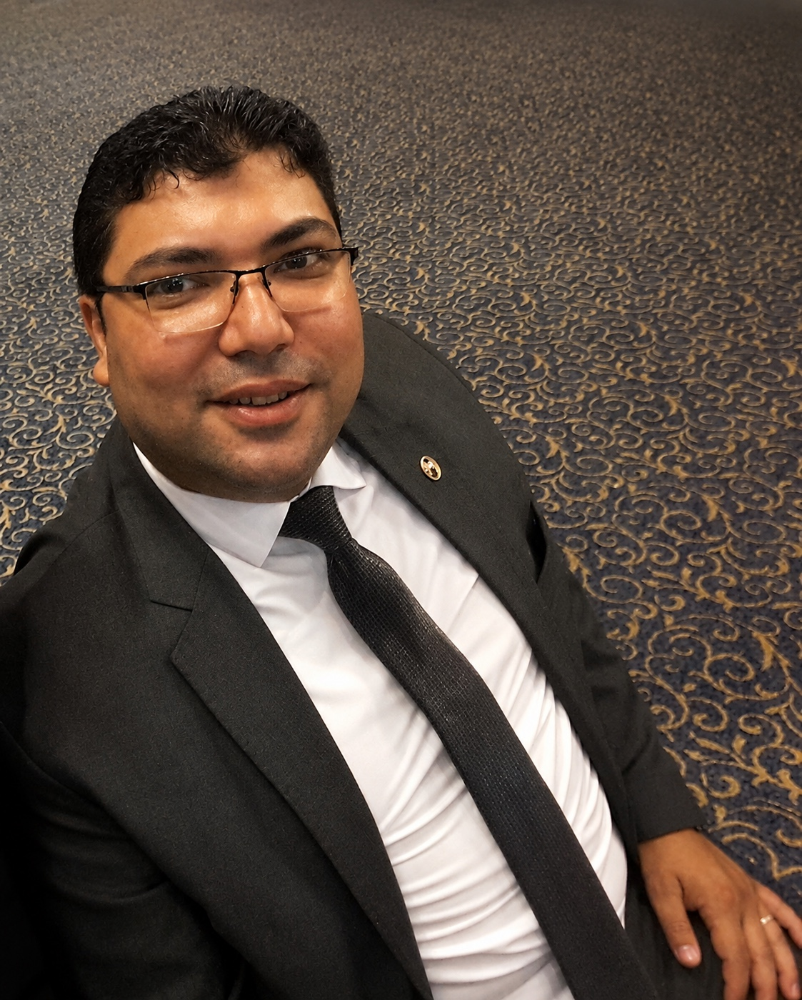

أرسل طلبك
اكتب بياناتك والخدمة المطلوبة وتفاصيل الموضوع.
مكتب الأستاذ محمد السرجاني — محاسب قانوني، خبير مثمن ومصفي قضائي، مع خدمات متخصصة للشركات والأفراد في الضرائب والمحاسبة وتأسيس الأعمال.

نقدّم خدمات محاسبية وضريبية ومهنية مصممة لمساعدة العميل على فهم موقفه واتخاذ قراراته بثقة.
من الاستشارة الضريبية والإقرارات والفواتير الإلكترونية، إلى تأسيس الشركات ودراسات الجدوى والميزانيات، يعمل المكتب بمنهج واضح يضع احتياج العميل في المقدمة.
الهدف هو أن تحصل على إجابة واضحة، إجراء صحيح، وخطوة عملية تقدر تبدأ بها.
اكتب بياناتك والخدمة المطلوبة وتفاصيل الموضوع.
يتم الاطلاع على الطلب وفهم احتياجك بشكل مبدئي.
انتظر الرد من الأستاذ محمد السرجاني لتأكيد الموعد والتفاصيل.
تدخل الاستشارة وأنت عارف الخطوة التالية بوضوح.
المواعيد مرتبة يومًا بيوم، مع توضيح كل فترة بشكل مباشر.
للاستفسار أو حجز استشارة، تقدر تتواصل معنا مباشرة.